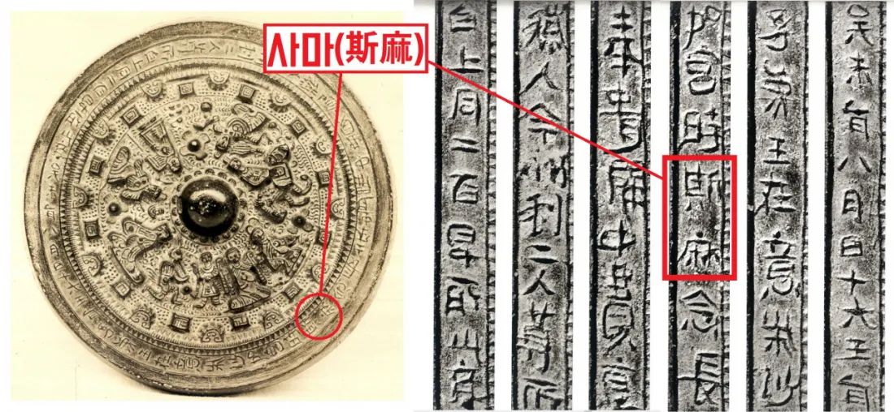

🏯
세계사 · Ⅰ-2. 동아시아, 인도 세계의 형성 — 학습지 13~14쪽
✦ ✦ ✦
교과서 31~33쪽
03. 일본 고대 국가의 발전
◆
야요이 시대 · 야마토 정권 · 나라 시대 · 헤이안 시대
◆
🔄
지난 시간 복습 — 메소포타미아 vs 이집트 문명
| 구분 | 메소포타미아 | 이집트 |
|---|---|---|
| 발생지 | 티그리스·유프라테스강 | 나일강 유역 |
| 지형 | 개방적 → 지배 세력 잦은 교체 | 폐쇄적(사막·바다) → 안정적 왕조 |
| 최고 통치자 | 왕 = 지배자, 제사장 (신정 정치) | 파라오 (태양신 '라'의 아들) |
| 세계관 | 현세 중시 (길가메시 서사시) | 내세적 (사후 세계 중시) |
| 문자 | 쐐기 문자 | 상형 문자 (파피루스에 기록) |
| 역법·수학 | 태음력 · 60진법 | 태양력 · 10진법 |
| 대표 건축 | 지구라트 | 피라미드 (파라오의 무덤) |
| 대표 법전 | 《함무라비 법전》 | — |
🔄
지난 시간 복습 — 인도 문명
🏙️ 인도 문명
- 기원전 2500년경 인더스 강 상류 펀자브 지방에서 드라비다인이 형성한 것으로 추정
- 계획도시 하라파, 모헨조다로 건설
🚶 아리아인의 이동과 사회
- 기원전 1500년경 아리아인 진출 — 중앙아시아에서 북인도로 이동, 이후 갠지스강까지 진출
- 원주민을 지배하기 위해 카스트제 성립(브라만·크샤트리아·바이샤·수드라)
- 자연신을 숭배하는 브라만교 성립, 경전 《베다》 사용
🔄
지난 시간 복습 — 중국 문명
🌊 하·상 왕조
- 기원전 2500년경 황허강과 창장강 일대에서 문명 발전, 하 왕조(얼리터우 유적)는 문헌상 최초의 국가
- 상 왕조: 왕이 점친 내용을 갑골에 기록하는 신권 정치 실시
- 점친 내용과 결과를 갑골문으로 기록 → 한자의 기원
⚔️ 주 왕조
- 상을 멸망시키고 건국, 왕이 수도 인근을 직접 지배하고 제후에게 나머지 지역을 다스리게 하는 봉건제 실시
- 혈연에 기초한 종법 제도 발전
🔄
복습 — 춘추 전국 시대 빈칸 채우기
◆
춘추 전국 시대 복습
- 춘추 시대에는 춘추 5패가 존왕양이를 명분으로 제후국들을 통솔하였다.
- 전국 시대에는 전국 7웅이 서로 패권을 다투는 약육강식의 시대였다.
- 부국강병을 위한 제후국들의 경쟁 속에서 유가·법가·도가·묵가 등 다양한 사상가 집단인 제자백가가 등장하였다.
🔄
복습 — 진나라 빈칸 채우기 (1)
◆
진나라 복습
- 기원전 221년 전국을 통일한 진왕 정은 스스로를 시황제라 칭하였다.
- 진시황제는 전국에 관리를 파견하여 다스리는 군현제를 실시하였다.
- 중앙 집권 강화를 위해 화폐 통일과 도량형 통일을 단행하였다.
🔄
복습 — 진나라 빈칸 채우기 (2)
◆
진나라 복습
- 사상 통제를 위해 책을 불태우고 유생들을 산 채로 묻은 분서갱유를 단행하였다.
- 북방 흉노족의 침입을 막기 위해 만리장성을 축조하였다.
- 대규모 토목 공사와 무리한 대외 원정으로 백성들의 불만이 커져 진승 오광의 난 등 농민 반란이 일어났고, 결국 진은 멸망하였다.
🔄
복습 — 한나라 빈칸 채우기
◆
한나라 복습
- 한 고조(유방)는 봉건제와 군현제를 절충한 군국제를 실시하였다.
- 한 무제는 유교를 통치 이념으로 삼아 오경박사를 설치하고 태학을 설립하였다.
- 인재 등용을 위해 지방관이 향촌의 인물을 추천하는 향거리선제를 실시하였다.
- 물자 유통과 재정 확충을 위해 균수법과 평준법을 시행하고, 화폐를 오수전으로 통일하였다.
🔄
복습 — 위진 남북조와 수 빈칸 채우기
◆
위진 남북조 복습
- 북위의 효문제는 평성에서 뤄양으로 천도하고 선비족의 언어와 복장을 금지하는 등 한화 정책을 추진하였다.
- 위진 남북조 시대에는 추천을 통해 인재를 선발하는 9품중정제가 실시되어 문벌 사회가 형성되었다.
- 북위 효문제 때 처음 시행된 균전제는 농민에게 국가가 토지를 지급하는 토지 제도로, 이후 수·당 대까지 이어졌다.
🔄
복습 — 수 빈칸 채우기
◆
수 복습
- 수 문제는 9품중정제를 폐지하고 시험을 통해 인재를 선발하는 과거제를 실시하였다.
- 수 문제는 중앙 관제를 정비하여 3성 6부제를 마련하였다.
- 수 양제는 강남과 화북을 잇는 대운하를 완성하여 남북 간 경제 교류를 촉진하였다.
🔄
복습 — 당 빈칸 채우기
◆
당 복습
- 당 태종은 동돌궐을 정복하고 율령 체제를 정비하였는데, 이 시기를 정관의 치라 부른다.
- 8세기 균전제가 붕괴하는 가운데 절도사 안녹산과 사사명이 일으킨 안사의 난으로 당은 크게 쇠퇴하였다.
- 균전제 붕괴 이후 당은 토지와 자산을 기준으로 세금을 부과하는 양세법을 실시하였다.
- 결국 절도사 주전충에 의해 당은 멸망하였다(907).
🗾
학습지 13쪽 — 1. 일본 고대 국가의 성립 (1)(2)
◆
1. 일본 고대 국가의 성립
🗾 (1) 야요이 시대
- 성립(기원전 3세기경): 청동기와 철기를 사용하는 야요이 시대 성립
- 연합(3세기): 30여 개 소국이 야마타이국을 중심으로 연합체 형성
🏯 (2) 야마토 정권 — 성장
- 성장: 4세기 야마토 정권이 주변 소국을 통합
🏯
학습지 13쪽 — 1. 일본 고대 국가의 성립 (2) 쇼토쿠 태자
◆
1. 일본 고대 국가의 성립
🏯 (2) 야마토 정권 — 쇼토쿠 태자
- 중국, 한반도의 선진 문화 수용
- ➊ 아스카 문화 발전: 불교 장려책 실시
📜
학습지 13쪽 — 1. 일본 고대 국가의 성립 (2) 다이카 개신
◆
1. 일본 고대 국가의 성립
📜 (2) 야마토 정권 — 다이카 개신(645)
- 군주 중심의 중앙 집권적 체제를 지향
- 국호 '일본', '천황' 칭호의 사용
- 다이호 율령 반포 (당의 율령 모방)
🖼️
다이센 고분

🖼️
인물화상경

🏮
학습지 13쪽 — 2. 나라 시대와 헤이안 시대 (1) 나라 시대
◆
2. 나라 시대와 헤이안 시대
🏮 (1) 나라 시대(710~794)
- ① 시작(710): 당의 장안을 본떠 ➋ 헤이조쿄(나라)를 조성한 후 새 수도로 삼아 천도
- ② 문화: 견신라사와 견당사 파견, 도다이사 건립, 《고사기》, 《일본서기》, 《만엽집》 등 편찬
🌸
학습지 13쪽 — 2. 나라 시대와 헤이안 시대 (2) 헤이안 시대
◆
2. 나라 시대와 헤이안 시대
🌸 (2) 헤이안 시대(794~1185)
- ① 시작(794): 귀족 세력 견제를 위해 헤이안쿄(교토)로 천도하면서 시작
- ② 문화: 9세기 말 견당사 파견 중지 → ➌ 국풍 문화 발달 (가나 문자 성립, 와카 유행)
- ③ 사회: 귀족과 호족의 장원 확대, 무사가 등장하여 독자 세력으로 성장
🖼️
헤이안 시대 사진
✏️
학습지 14쪽 — 개념 확인 문제 1
◆
개념 확인 문제
1
다음 시기와 관련된 내용으로 옳은 것끼리 선으로 연결하시오.
⑴ 야마토 정권
→
아스카 문화의 발전
⑵ 나라 시대
→
견당사, 견신라사 파견
⑶ 헤이안 시대
→
국풍 문화 발달
✏️
학습지 14쪽 — 개념 확인 문제 2
◆
개념 확인 문제
2
다음 내용이 옳으면 ○표, 틀리면 ×표 하시오.
⑴ 기원전 3세기 무렵 일본 열도에서는 청동기와 철기를 사용하는 야요이 시대가 시작되었다. ( ○ )
⑵ 나라 시대는 8세기 초 야마토 정권이 헤이안쿄를 수도로 삼고 천도하면서 시작되었다. ( × )
⑶ 9세기 말 당이 쇠퇴하자 견당사 파견을 중지하고 대외 무역 창구를 규슈의 다자이후로 집중하였다. ( ○ )
✏️
학습지 14쪽 — 개념 확인 문제 3
◆
개념 확인 문제
3
빈칸에 들어갈 알맞은 말을 쓰시오.
⑴ 6세기 초 ( 쇼토쿠 태자 )은/는 중국과 한반도의 선진 문화를 받아들여 중앙 집권 체제를 강화하고 불교를 장려하였고, 이에 따라 불교 문화에 토대를 둔 ( 아스카 문화 )이/가 발달하였다.
⑵ 7세기에는 군주 중심의 중앙 집권적 체제를 지향하는 ( 다이카 개신 )이/가 일어났다.
⑶ 나라 시대에는 일본의 고대 신화와 역사를 정리한 《고사기》와 ( 일본서기 ), 고대 시가를 엮은 《만엽집》 등이 편찬되었다.
✏️
학습지 14쪽 — 개념 확인 문제 4
◆
개념 확인 문제
4
헤이안 시대에 대한 설명으로 옳은 것을 <보기>에서 있는 대로 고른 것은? ( ③ ㄴ, ㄷ )
ㄱ. 도다이사가 건립되었다.
ㄴ. 가나 문자가 성립하였다.
ㄷ. 일본 고유의 시가인 와카(和歌)가 발달하였다.
ㄹ. 다이센 고분과 같은 전방후원분이 조성되었다.
① ㄱ, ㄴ ② ㄱ, ㄷ ③ ㄴ, ㄷ ④ ㄴ, ㄹ ⑤ ㄷ, ㄹ
🔄
복습 — 일본 고대 국가의 성립 빈칸 채우기
◆
일본 고대 국가의 성립 복습
- 6세기 초 쇼토쿠 태자는 중국과 한반도의 선진 문화를 수용하여 정치 개혁을 추진하였다.
- 이 시기 불교 장려책이 실시되면서 아스카 문화가 발전하였다.
- 7세기 중반 군주 중심의 중앙 집권적 체제를 지향한 다이카 개신이 단행되었다(645).
- 이후 당의 율령을 모방한 다이호 율령이 반포되었다.
🔄
복습 — 나라 시대 빈칸 채우기
◆
나라 시대 복습
- 710년 당의 장안을 본떠 조성한 헤이조쿄(나라)로 천도하면서 나라 시대가 시작되었다.
- 나라 시대에는 견신라사와 견당사가 파견되어 대외 교류가 이루어졌다.
- 불교 진흥을 위해 도다이사가 건립되었다.
- 일본의 고대 신화와 역사를 정리한 《고사기》와 《일본서기》가 편찬되었다.
🔄
복습 — 헤이안 시대 빈칸 채우기
◆
헤이안 시대 복습
- 794년 귀족 세력을 견제하기 위해 헤이안쿄(교토)로 천도하면서 헤이안 시대가 시작되었다.
- 9세기 말 당이 쇠퇴하자 견당사 파견을 중지하였다.
- 이후에도 민간 무역은 지속되어 대외 무역 창구가 규슈의 다자이후로 집중되었다.
- 견당사 파견 중지를 계기로 가나 문자 성립, 와카 유행 등 일본 고유의 국풍 문화가 발달하였다.